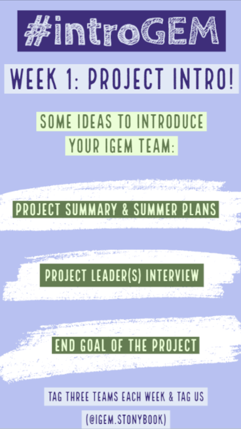
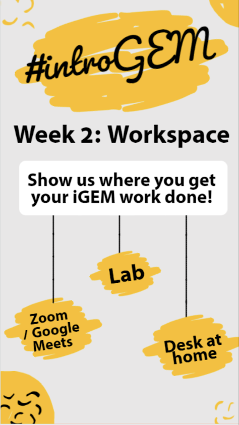
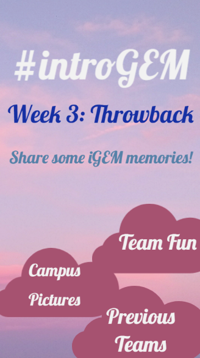
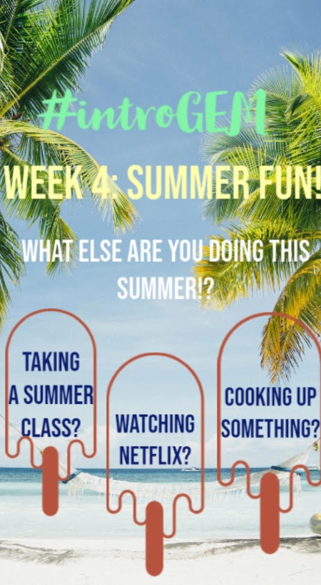
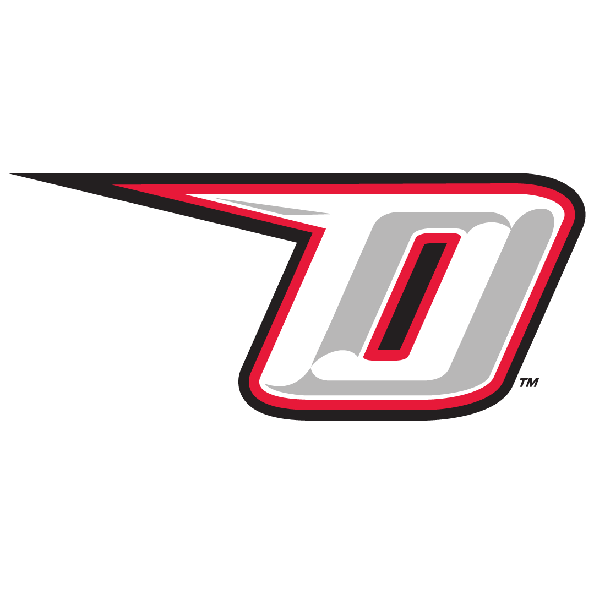

One of the best things about iGEM is that we are all a giant family. This allows us to easily communicate and work together to accomplish a common goal of developing the synthetic biology field and improving our world as a whole. Since the first team began in 2014, Stony Brook iGEM has been committed to creating unique collaborations with other teams. This year, we were able to further enjoy our iGEM experience by working together with many teams. Through our collaborations, we realized that when we come together and join forces, we are able to accomplish anything. From getting to know multiple teams through our #introGEM challenge, learning the ins and outs of video production, writing a journal, to educating our peers, we were able to foster beautiful friendships with other iGEM teams. We hope that the connections we've fostered will not only aid the team's future endeavors, but add to the field of science as a whole.
#introGEM
As summer began, our team wanted to create a fun way for iGEM teams to get to know each other. This led us to create the #introGEM challenge on Instagram. Through this challenge, we were able to connect with other teams as well as strengthen our own. Each week, our team came together to create new content to match the week’s challenge and motivate other iGEM teams on Instagram to participate. Through this challenge, we got to know iGEM teams from all around the world and learn about their projects.
Participants
Rochester
OhioState University
Oneonta
Patras University
Düsseldorf
Shenzhen University
University of Puerto Rico, Mayagüez




Ohio State University
When we learned that the iGEM team at Ohio State University (OSU) was also working with kill switches, we were quick to reach out to them. We instantly connected with the team due to our common focus and arranged a Zoom call in June. From the very beginning, we saw that OSU would be a great team to work with, not just because they were also working with kill switches, but also because the team wanted to spread awareness of kill switches and how beneficial they are.
In late June, we reached out to the team again and asked them if they would be interested in creating a video that teaches the public about kill switches and their benefits. We settled upon a video that would be set as News Report accomplished through drawings and voiceovers. This video provided a fun way to reach out to the public and teach them about the benefits of killswitches and giving a quick overview of our own projects as well!

SUNY Oneonta University
This year, our team is putting a heavy emphasis on educating our peers about the importance and benefits of GMOs and we thought the best way to execute this would be to display posters across campus. These posters would include common myths about GMOs and popular products that are characterized as GMOs. Displayed in the Oneonta dining halls and the Stony Brook Union, the posters will have a QR code on them that students can scan to gain access to more GMO facts. We hope that these posters will provide a fun way for students in our prospective schools to gain more insights on GMOs while learning about the importance of synthetic biology.
Maastricht University
Good research constitutes proper science communication. For this reason, our team decided to collaborate with Maastricht University in their journal collaboration. Here, we set off to write about our project in proper article format, discussing topics such as the problem we hope to solve, how we aim to solve it, and our project’s future applications. We also worked to peer-review other teams’ articles, making sure what they have written is proper and legible. Participating in this collaboration taught us the importance of having a coherent summary of our work and the importance of effective writing in the science field. We are proud to say that, out of about 60 journals, we are one of the 27 iGEM teams chosen to be featured on the printed journal!
Instagram Challenges
On top of hosting our own Instagram Challenge, we participated in many challenges organized by other teams! These challenges provided a fun way to get to know other teams, learn about their projects, and form everlasting connections.
 Ohio State University
Ohio State University
 Maastricht University
Maastricht University